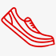

Делимся опытом
Наши сотрудники всегда готовы поделиться опытом, так как сами бегают полумарафоны, переплыли Босфор,
готовятся к соревнованиям к триатлону!
Заботимя о здоровье
Мы работаем для того, чтобы Ваши занятия спортом шли на пользу Вашему здоровью и были в радость Вам
и Вашим близким!

Учим бегать
Помогаем с обучением правильной технике бега! Дружим с крупнейшей школой бега в России - I LOVE RUNNING
Получите бесплатную консультацию по подбору пульсометра
Просто заполните форму заявки и мы перезвоним вам в течении 10 минут
Каталог пульсометров
Для фитнеса
Для бега
Для триатлона
Пульсометр Polar FT1
Для первых шагов в тренировках, основанных на сердечном
ритме